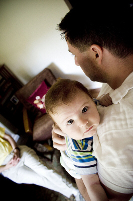

Baby Burp Cloths: Your First Defense Against Frumpiness

{Photo by feverblue}
Are your baby burp cloths locked and loaded? Are you prepared for the battle between goobers and glamour?
Picture This...
Your precious infant is cooing happily on your shoulder, flirting with your visitors and playing with your hair.
You pat your infant on the back gently, thrilled to be dressed in something other than sweats...to be outside the house...talking in full sentences
again. You calmly drink in the oohing and aahing going all around you. After all, you do have the most perfect baby ever birthed.
...What's that?
...Do I hear the
rumblings of stomach discontent?
A burp escapes your baby and everyone laughs - until you feel the warm sensation of something slowly
sliding down your shoulder and dripping onto the floor!
And it's a mad-dash to grab ANYTHING for damage control. Your beautiful blouse has an automatic ticket to the cleaners.
This could have been avoided with an properly armed arsenal of baby burp cloths. Do you have an
emergency stash of burping cloths on hand? Or are you hoping no one will notice the apple-sized yellowish
discoloration on your shoulder?
Baby burp clothes are sections of cloth that you place under a baby's mouth. It's to protect your
clothing from the onslaught of slobber and milk that may accompany the burp.
If you don't help her get that burp out, you will have either a very fussy baby on your hands, or an
unexpected explosion of partially digested milk in a few minutes. Develop the knack for getting that burp!
Heather's Recipe for Stunningly Clean Burp Pads
1 scoop Oxyclean
+ hot water
+ an overnight soak
+ wash on regular cycle
Brand-spanking-new burp pads!
This even works on stains that are years old.
Burp Rags - Shopping Smart
There are thousands of infant burp pads available for you to purchase. However pretty they may be, never substitute prettiness for practicality. (Fortunately, there are burp rags out
there that give you both prettiness and practicality - you just need to know where to find them.)
Here are some shopping rules for purchasing burp pads:
The infant burp pad should be large enough to cover the majority of your shoulder.
It should never be made out of fabric that your baby can't throw up on. (No silks or satins!)
It should always be machine washable.
There are plenty of burp cloths out there that are utterly useless. It seems that any piece of leftover-scrap
can be trimmed and sold as a baby burp cloths these days.
My first set of baby burp cloths was purchased at Target, after I opened the package I realized they were only a little
larger than my hand! To add insult to injury, after one tiny spit up they were completely soaked through. They ended up as wash cloths. Money wasted.
Best Buys for Pretty and Practical Infant Burp Rags
Since I struck out at Target, I turned to the Internet to give me functional, yet fashionable burp cloths to carry and use.
I was amazed to discover designer burp cloths that were not only affordable, they were actually worth the money spent (which
really isn't that much!).
If your baby is over 15 lbs, you'll need a burp rag that covers a larger portion of your shoulder. Murphy's Law dictates that if
you use a small burp cloth, your infant will find the ONE spot not covered and spray all his lunch in that one spot.
There are several companies that make large (yet attractive!) burp pads. Here's a list of my personal favorites:
The burp cloth collection at Pink Taffy Designs
are super-trendy with warm chocolates, polka dots, and other "in" designs. They
are not your garden-variety baby burp cloths! They are classy enough to impress, yet durable enough to wash. Expect to pay a little more for these original creations.
If you're looking for eco-friendly burp rags for your baby, these large burp pads by BabySoy are a great purchase.
For those babies that seem particularly prone to spitting up, these burp rags have an extra layer of absorbency. They not be as wide as the pads
above, but they pack a powerful punch of protection for the vigorous vomitor.
Add your own graceful monogram on this exclusive design at Pink Taffy.
Yes, I have worn the spit-up "mother stain" in public before. Although it silently and proudly screams
MOTHER! to all who pass, I prefer people learned that from the precious face in my lap and not the stain on my shoulder.
She will go all day without spitting up and then the moment I don't have a burp cloth around,
she will spit up all over. Heed Murphy's Law and stay well stocked!